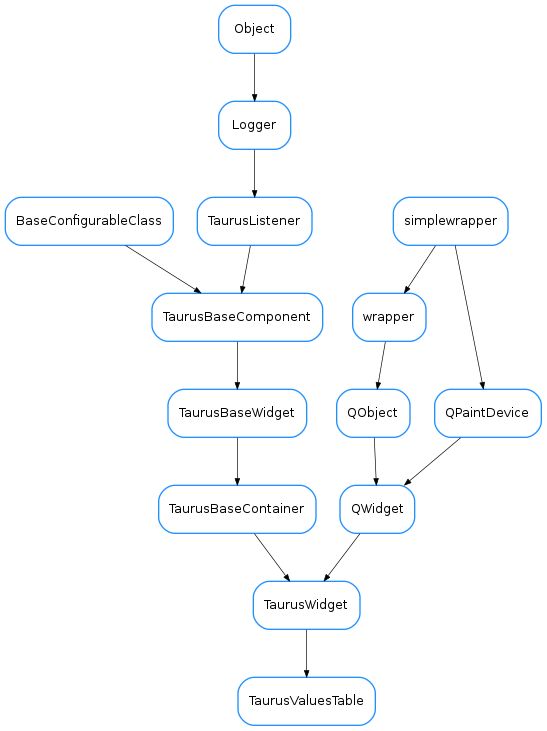

TaurusValuesTable¶

-
class
TaurusValuesTable(parent=None, designMode=False, defaultWriteMode=None)[source]¶ Bases:
taurus.qt.qtgui.container.tauruswidget.TaurusWidgetA table for displaying and/or editing 1D/2D Taurus attributes
-
askCancel()[source]¶ Shows a QMessageBox, asking if user wants to cancel all changes. Triggered when user clicks Cancel button.
-
cancelClicked()[source]¶ This is a SLOT that is being triggered when CANCEL button is clicked.
Note
This SLOT is called, when user does not want to apply table modifications. When no cell was modified it will not be called.
-
classmethod
getQtDesignerPluginInfo()[source]¶ Reimplemented from
TaurusWidget.getQtDesignerPluginInfo()
-
getWriteMode()[source]¶ whether the widget is showing the read or write values
Return type: boolReturns:
-
okClicked()[source]¶ This is a SLOT that is being triggered when ACCEPT button is clicked.
Note
This SLOT is called, when user wants to apply table modifications. When no cell was modified it will not be called. When modifications have been done, they will be writen to w_value of an attribute.
-